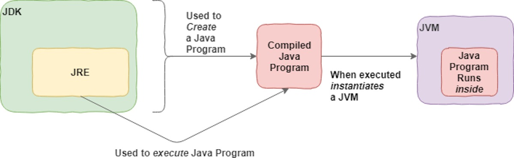

The Java Development Kit (JDK) is one of three core technology packages used in Java programming, along with the JVM (Java Virtual Machine) and the JRE (Java Runtime Environment). It's important to differentiate between these three technologies, as well as understanding how they're connected.
The JVM is the Java platform component that executes programs. The JRE is the on-disk part of Java that creates the JVM. The JDK allows developers to create Java programs that can be executed and run by the JVM and JRE. Developers new to Java often confuse the Java Development Kit and the Java Runtime Environment. The distinction is that the JDK is a package of tools for developing Java-based software, whereas the JRE is a package of tools for running Java code. This figure shows how the JDK fits into the Java application development lifecycle.

Hence, in order to write, compile and exceute a java program- 1. first you will need to install JDK 2. Second you will need to install an Integrated Development Envionment (IDE), which is just like an editor. We recommend you to JGrasp for this course. 3. Finally start coding.
Go to the following page:
This page contains an optional survey by the jGRASP authors; you may scroll down and skip it. We recommend installing the lastest stable, non-beta version of the jGRASP editor. At the time of writing, this was version 2.0.6_04. Locate the appropriate download link and click it:
Save the file to your desktop or another convenient location.
Open the .exe file you just downloaded. A setup wizard will appear.

The default settings are reasonable for most users, and you can complete the installation by repeatedly clicking "Next".
At this point, you will have a new jGRASP shortcut on your desktop. Double-click it to open jGRASP:

If you see this, you're all set! However, if you get the following error:

then your system does not yet have the JDK installed. Make sure you followed the JDK installation instructions, and try again.
Open the .pkg file you just downloaded.
You may receive an error about jGRASP being from an "unidentified developer":

This is due to a macOS "feature" that makes it difficult to run applications not distributed via Apple's official channels.
To run the jGRASP installer regardless, bypassing this "feature", right click the .pkg file and choose "open".
You will see an installation wizard.

The default settings are reasonable for most users, and you can complete the installation by repeatedly clicking "Continue".
You can now run jGRASP by opening jGRASP.app from the Applications folder.
One way to do this is to press Cmd+Space, type "jGRASP", and press Enter:

If jGRASP opens successfully, then you're all set! However, if you see the following error:

then you don't have the JDK installed. Make sure you followed the JDK installation instructions, and try again.